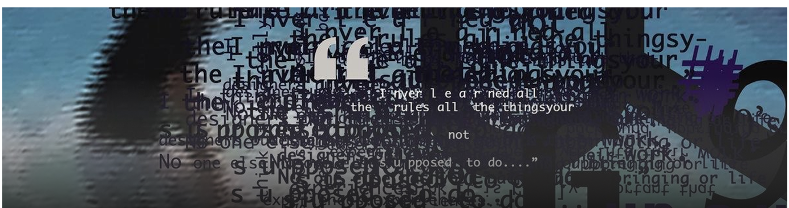
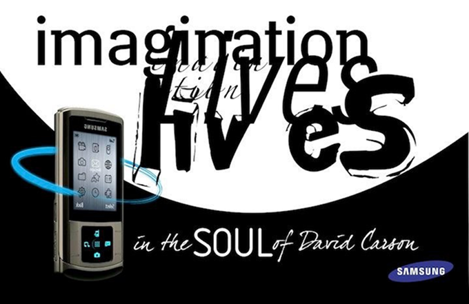
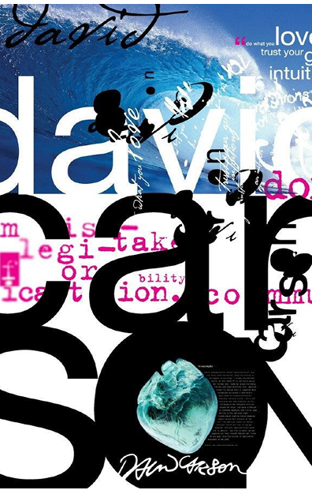

Постмодернизм: дизайнеры, продающие
свой взгляд, а не свои имена

ПОСТМОДЕРНИЗМ

Искусство разных эпох тесно связано между собой: художники часто обращаются к произведениям прошлого, переосмысливают их и создают новые интерпретации. Такие отсылки помогают показать связь времён и раскрыть знакомые образы с новой стороны.
Постмодернизм сформировался во второй половине XX века и стал реакцией на строгие идеи модернизма. Для него характерен отказ от единого стиля и стремление к свободному сочетанию разных художественных приёмов. Художники часто используют цитирование, иронию, игру со смыслами и отсылки к произведениям прошлого, соединяя элементы разных эпох и культур. Благодаря этому искусство становится более открытым для новых интерпретаций.
Основные принципы постмодернизма связаны со свободой художественного выражения и переосмыслением традиций. Для этого направления характерно смешение разных стилей и эпох, ирония, а также игра с культурными символами и образами, что делает искусство более многослойным и открытым для различных интерпретаций.
В графическом и предметном дизайне идеи постмодернизма ярко проявились в работах нескольких известных дизайнеров. Одним из важных явлений стала дизайнерская группа Мемфис. Участники группы создавали предметы и графику с яркими цветами, геометрическими формами и необычными узорами, разрушая строгие правила модернистского дизайна и показывая, что дизайн может быть смелым и экспериментальным.
Большое влияние на графический дизайн оказал Дэвид Карсон, известный своими экспериментами с типографикой и композицией. Работая в журнале Ray Gun, он создавал нестандартные макеты, нарушал привычные правила верстки и превращал текст в визуальный элемент композиции.
Также важным представителем постмодернистского дизайна является Нэвилл Броуди. Его работы для журнала The Face и различных музыкальных проектов отличались смелой типографикой, необычной композицией и экспериментами со шрифтами. Благодаря таким дизайнерам графический дизайн стал более свободным, выразительным и открытым для новых визуальных решений.
Обращение к прошлому, смешение стилей и культурных элементов можно увидеть в графическом дизайне, рекламе, кино и цифровом искусстве. Однако современные художники часто объединяют постмодернистские приёмы с новыми технологиями и подходами.
Постмодернизм стал важным этапом в развитии искусства и дизайна. Он изменил отношение к традициям и показал, что культура может развиваться через диалог с прошлым. Даже сегодня многие идеи постмодернизма продолжают влиять на визуальную культуру и формировать новые творческие направления.
